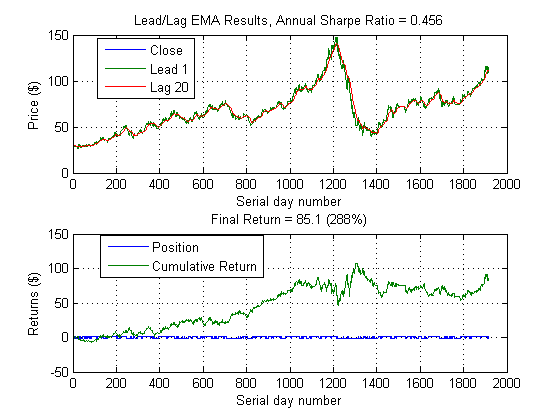
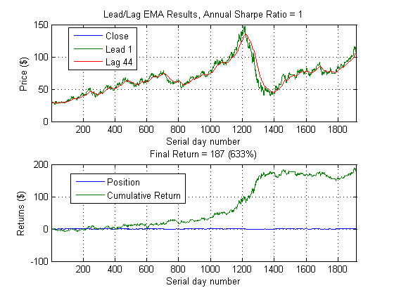
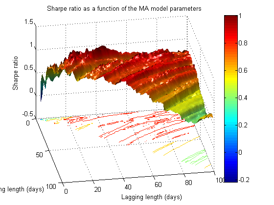
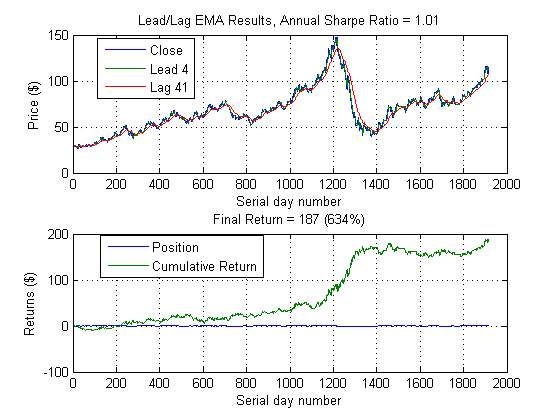
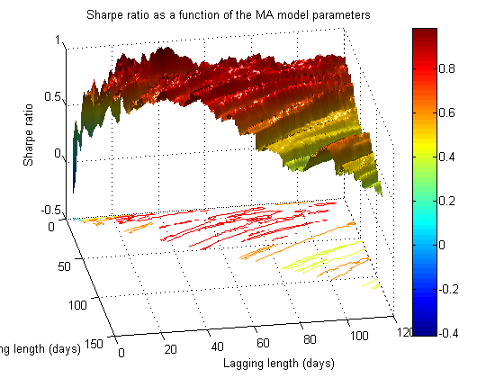
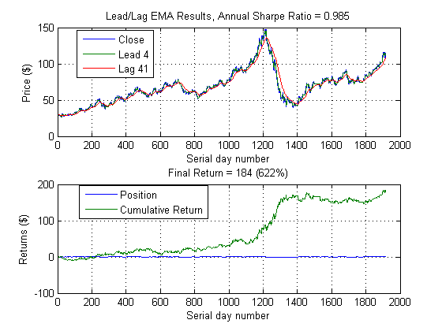

Algorithmic Trading with MATLAB: Moving Average Rule
This demo is uses MATLAB to develop and test a simple trading strategy using an exponential moving average.
Copyright 2010-2012, The MathWorks, Inc. All rights reserved.
Contents
(Re)Load data
data = xlsread('brent_1D.xlsx');
LCOClose = data(:,3);
annualScaling = sqrt(250);
Using functions to automate our workflow
The leadlag function copies over most of the functionality from the previous script and places it in a reusable format. All we need to specify is the historical data, our leading and lagging day lengths, and our scaling parameter.
We can demonstrate the use of this function by setting the leading average to 1 (i.e.: not an average at all) and the lagging average to, say, 20 days.
leadlag(LCOClose,1,20,annualScaling)
Performing a simple parameter sweep
Perform a parameter sweep to identify the best lagging parameter, given a leading value of 1.
sharpes = nan(100,1); for m = 1:100 [~,~,sharpes(m)] = leadlag(LCOClose,1,m); end [~,mxInd] = max(sharpes); leadlag(LCOClose,1,mxInd,annualScaling)
Estimate parameters over a range of values
Allows both moving average lengths to vary and identify the best combo.
sharpes = nan(100,100); tic for n = 1:100 for m = n:100 [~,~,sharpes(n,m)] = leadlag(LCOClose,n,m,annualScaling); end end toc % We can again use plotting tools to create a custom plot. In this case, % we show the Sharpe ratio as a function of both the leading and lagging % days. MATLAB can easily deplay 3D data like this using surface and % contour plots. sweepPlotMA(sharpes)
Elapsed time is 4.412662 seconds.
Plot best Sharpe ratio
[~, bestInd] = max(sharpes(:)); % (Linear) location of max value [bestM, bestN] = ind2sub(100, bestInd); % Lead and lag at best value leadlag(LCOClose, bestM, bestN,annualScaling)
More automation and more real-world considerations
Next, we'll add the trading costs associated with the bid/ask spread. This will get us closer to the actual profit we could expect. As an exercise, you should extend this to account for additional trading costs and slippage considerations.
Note also that we have automated our parameter sweep process. Just as before, when we adapted our script into the leadlag function, we are now taking the double-|for| loop above and turning it into its own function.
cost = 0.05; % Bid/ask spread range = {1:120, 1:120}; % Leading and lagging average parameter ranges llfun =@(x) leadlagFun(x, LCOClose, annualScaling, cost); tic [maxSharpe, param, sh, vars] = parameterSweep(llfun, range); toc % Plot Sharpe surface sweepPlotMA(vars{1}, vars{2}, sh) % Plot best Sharpe ratio figure leadlag(LCOClose,param(1),param(2),annualScaling,cost)
Elapsed time is 1.811124 seconds. 